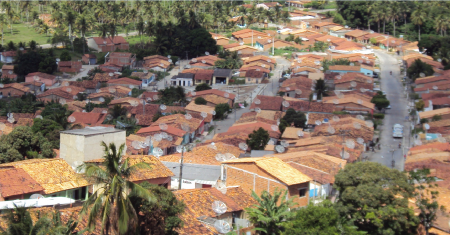

Pacatuba
História
Pacatuba é um dos 75 municípios do estado de sergipe, e fica localizado no nordeste do brasil. sua distância para a capital do estado aracaju é de 68,6 quilômetros. e faz fronteira com seis municípios: japoatã, japaratuba, brejo grande, pirambu, neópolis e ilha das flores.
Pacatuba tem uma população estimada em 13.137 habitantes no censo 2010. segundo informações do ibge, a população do município em 2017 já esta em 14.420 habitantes.
Antes mesmo da chegada definitiva em terras sergipanas dos portugueses, em 1590, acredita-se que os índios tupinambás já tinham, por aquelas bandas de pacatuba, uma relação comercial com franceses. no início de 1600, já se tinha notícia de um forte aldeamento na confluência do rio poxim do norte com o betume. quem comandava aquele povoamento era o cacique pacatuba. quando cristóvão de barros invadiu sergipe, cumprindo ordens do governo da bahia e de felipe ii da espanha, que reinava em portugal, deu-se uma matança generalizada. todos os maiores recursos militares teriam sido usados. cristóvão venceu os poderosos caciques baepeba, serigy e siriry.
Para a maioria dos historiadores, antes que as colunas de cristóvão de barros chegassem à região do são francisco, os caciques japaratuba e seu irmão pacatuba acabaram se entregando aos portugueses e pedindo paz. mas outros estudiosos discordam e acreditam que cristóvão encontrou resistência sim, e venceu por conta da força militar.
fonte: https://www.pacatuba.se.gov.br/Pontos Turísticos
Pantanal de Pacatuba
Pacatuba tem um trecho cercado de mata atlântica que esconde dunas, lagoas costeiras, pântanos e manguezais, apelidados de Pantanal Sergipano ou Pantanal de Pacatuba. Assim como no Pantanal mato-grossense, o local é uma planície inundada e há uma grande biodiversidade. São mais de 100 espécies catalogadas, com muitos peixes, mamíferos, aves e plantas ornamentais.
Dados Gerais de acordo com o IBGE
| Prefeito (a) | Manuella Almeida Martins |
| Vice-Prefeito (a) | Jeronimo Ramos Izidorio |
| Site do município | https://www.pacatuba.se.gov.br/ |
| Área territorial | 381,428 km² |
| População estimada | 14.650 pessoas |
| Densidade demográfica | 35,14 hab/km² |
| IDHM | 0,555 |
| PIB per capita | R$ 13.202,63 |